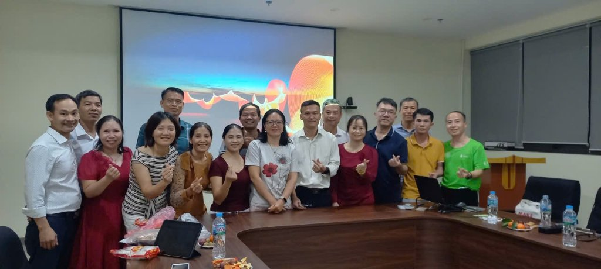
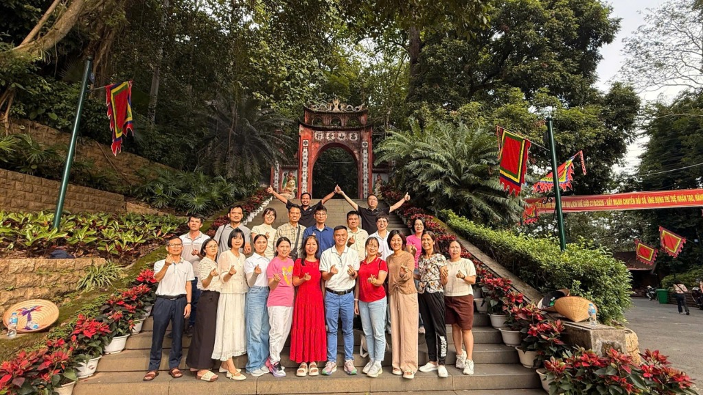
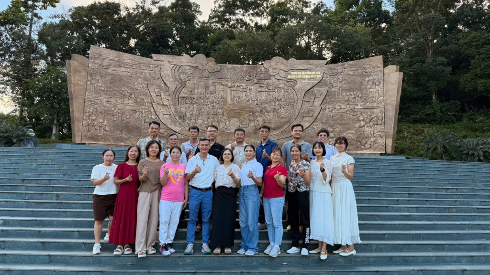

Cùng BS. Nguyễn Hoa nuôi dưỡng nguồn năng lượng tươi mới mỗi ngày qua kiến thức y khoa chuẩn mực, dinh dưỡng lành mạnh, hơi thở tỉnh thức và sự bình an nội tại.
Qua hàng chục năm điều trị Nội khoa, BS. Nguyễn Hoa nhận thấy những bệnh nhân hồi phục nhanh nhất và duy trì huyết áp, đường huyết ổn định nhất luôn là những người kết hợp hài hòa giữa Y học hiện đại và Năng lượng sống tích cực.
Ăn thuận tự nhiên, giảm đường tinh luyện, giảm muối, ưu tiên rau xanh và uống đủ nước ấm mỗi ngày.
Hít thở bụng sâu và chậm giúp tăng oxy máu, làm dịu nhịp tim và giảm áp lực thành mạch.
Duy trì 30 phút đi bộ, tập Yoga hoặc dưỡng sinh mỗi ngày giúp tăng độ nhạy Insulin và dẻo dai xương khớp.
Lấy tâm bình thản đối diện sóng gió, buông bỏ muộn phiền để giấc ngủ sâu và hệ miễn dịch khỏe mạnh.
Hành trình hợp nhất giữa Trí tuệ nhân tạo (AI) và Bản thể con người (Thân – Tâm – Trí): dám sống thật, đập bỏ lớp bùn định kiến để đánh thức “Bức tượng vàng 5.5 tấn” bên trong bạn, kích hoạt 700 tế bào thần kinh mới mỗi ngày tại Hồi hải mã và kiến tạo di sản trường tồn.
Được đúc kết từ hơn 30 năm kinh nghiệm lâm sàng Nội khoa – Hồi sức Cấp cứu Tim mạch và hành trình Đời Mới xAI của BS. Nguyễn Thị Hoa, cuốn sách lật điện tử (13 trang) đồng hành cùng bạn mở cánh cửa bước vào “Tuổi Thanh Xuân Thứ Hai”: Sống khỏe hơn, Bình an hơn, Yêu đời hơn, Hạnh phúc hơn và Làm chủ cuộc sống.
Trọn bộ kỷ niệm hành trình 3 ngày đáng nhớ (06–08/11/2026) của Thầy Tuấn Tử Tế, BS. Nguyễn Thị Hoa và đại gia đình học viên Kiến Tạo Đời Mới xAI Miền Bắc: từ buổi gặp mặt ấm áp tại Hà Nội, đêm thực hành AI say sưa tại Học viện Hồng Thịnh, sáng chạy bộ tại Công viên Thống Nhất cho tới chuyến hành hương về Đất Tổ Đền Hùng – Phú Thọ.
Bộ phim tư liệu đầy cảm xúc tái hiện trọn vẹn hành trình Học tập – Vui chơi – Kết nối (06–08/11) của thầy trò lớp Kiến Tạo Đời Mới xAI Miền Bắc.
Tổng hợp 15 đoạn video thực tế ghi lại những giây phút trò chuyện, hướng dẫn trực tiếp của Thầy Tuấn Tử Tế, tiếng cười đồng môn và năng lượng trẻ trung của cả đoàn.
Bấm nút ◀ Trước / Sau ▶ hoặc chạm vào từng ảnh nhỏ bên dưới để lật xem 47 bức ảnh kỷ niệm theo dòng thời gian.
“Xin chào! Tôi là hệ ngoại tiết. Có thể bạn chưa từng nghe tôi kể chuyện, nhưng mỗi ngày, mỗi giờ, mỗi phút, tôi đều đang âm thầm làm việc — tiết nước bọt, mồ hôi, bã nhờn, nước mắt, dịch mật và enzyme tiêu hóa để bảo vệ và nuôi dưỡng sự sống của bạn!”
Bộ phim hoạt hình 3D giáo dục sức khỏe (dài 14 phút 54 giây) được lồng tiếng bằng giọng kể ấm áp, truyền cảm của chính BS. Nguyễn Thị Hoa. Bộ phim đưa người xem khám phá đại gia đình Hệ Ngoại Tiết rộng lớn trong cơ thể: từ nguồn gốc phôi thai, cấu tạo tế bào chế tiết – ống dẫn và năng lượng ATP, đến hành trình diệu kỳ của Tuyến nước bọt, Tuyến mồ hôi, Tuyến bã nhờn, Tuyến lệ, Gan tiết mật, Tụy ngoại tiết và các Tuyến dạ dày – tiêu hóa, cùng cách nhận diện sớm dấu hiệu bất thường và chăm sóc cơ thể khỏe mạnh mỗi ngày.
“Tôi không phải là một cơ quan đơn lẻ nằm ở một chỗ, mà là mạng lưới nhiều tuyến, nhiều tế bào và hàng trăm tín hiệu hóa học thầm lặng giữ cho cơ thể bạn cân bằng từng giây phút!”
Bộ phim hoạt hình 3D giáo dục sức khỏe (dài 18 phút 52 giây) được lồng tiếng bằng giọng kể ấm áp, truyền cảm của chính BS. Nguyễn Thị Hoa. Bộ phim đưa người xem khám phá toàn bộ mạng lưới Hệ Nội Tiết: từ Vùng hạ đồi, Tuyến yên, Tuyến tùng, Tuyến giáp – Cận giáp, Tuyến ức, Tuyến thượng thận, Đảo tụy, Tuyến sinh dục cho tới các hormone từ Tim, Thận, Gan, Đường tiêu hóa và Mô mỡ — cùng cách nhận biết, phòng ngừa Đái tháo đường, Cường giáp, Suy giáp, Suy thượng thận.
“Xin chào! Tôi là hệ thần kinh của bạn. Tôi hiện diện trong từng suy nghĩ, từng bước chân, từng nhịp thở bạn chủ động điều khiển và cả những hoạt động âm thầm giúp bạn sống mỗi ngày!”
Bộ phim hoạt hình 3D giáo dục sức khỏe (20 phân cảnh, dài 12 phút 17 giây) được kể bằng giọng đọc ấm áp, truyền cảm của chính BS. Nguyễn Thị Hoa. Bộ phim đưa người xem bước vào thành phố ánh sáng kỳ diệu bên trong cơ thể: từ sự hình thành ống thần kinh thời kỳ phôi thai, thế giới vi mô của hàng tỷ Nơron – Synapse – Bao Myelin – Tế bào thần kinh đệm, tới sự phối hợp nhịp nhàng giữa Não bộ, Tủy sống với Trái tim, Lá phổi, Hệ tiêu hóa và cách nhận diện sớm dấu hiệu Đột quỵ (FAST).
“Xin chào! Bạn có biết bên trong cơ thể mình có hai người bạn đang làm việc ngày đêm mà chẳng bao giờ đòi ngợi khen? Chúng tôi chính là hai quả thận!”
Bộ phim hoạt hình 3D giáo dục sức khỏe được lồng tiếng bằng giọng kể ấm áp của chính BS. Nguyễn Thị Hoa. Theo chân hai quả thận cùng những đơn vị lọc Nephron tí hon, người xem được khám phá hành trình kỳ diệu từ thuở phôi thai tới cơ chế lọc máu – tái hấp thu tinh vi mỗi giây, sự phối hợp nhịp nhàng giữa Thận – Tim – Gan – Não – Phổi và bí quyết giữ gìn đôi thận khỏe mạnh suốt đời.
“Em là Hệ Bạch Huyết. Mỗi ngày em đi qua những nơi bạn chẳng bao giờ nhìn thấy. Bạn có muốn theo chân một giọt dịch để biết em làm gì không?”
Bộ phim hoạt hình 3D giáo dục sức khỏe (40 phân cảnh) được lồng tiếng bằng giọng kể ấm áp của chính BS. Nguyễn Thị Hoa (vai Hệ Bạch Huyết). Từ một vết xước nhỏ nơi đầu gối của An, bộ phim đưa người xem bước vào mạng lưới mạch ánh xanh ngọc kỳ diệu dưới da — gặp gỡ Tủy Xương, Tuyến Ức, Lách, Amidan, Hạch bạch huyết cùng đội ngũ Tế bào B, Tế bào T, Tế bào tua và Giọt dịch nhỏ.
“Một miếng cơm tưởng phải giữ nguyên hình mới giúp được An… Ai ngờ 'tan ra' mới chính là cách em nuôi lớn An từng ngày!”
Bộ phim hoạt hình 3D kể bằng giọng thật của chính BS. Nguyễn Thị Hoa (vai Hệ Tiêu Hóa), đồng hành cùng Cơm với chiếc khăn cam và bé An 10 tuổi — từ một nếp gấp nhỏ trong phôi thai, qua miệng, thực quản, dạ dày, ruột non, ruột già, gặp gan, túi mật, tụy, rừng nhung mao và khu phố vi sinh — để hiểu vì sao thức ăn PHẢI biến đổi mới nuôi dưỡng được cơ thể.

Có những buổi tối không cao lương mỹ vị, không tiệc tùng cầu kỳ, nhưng lại khiến lòng người ấm áp và tràn đầy năng lượng đến lạ kỳ. Đó chính là buổi tối ngày 07/11/2026 của thầy trò nhóm Kiến Tạo Cuộc Sống xAI Miền Bắc chúng tôi bên người thầy đáng kính — Thầy Tuấn Tử Tế.
Chiều muộn dần buông, ánh đèn phòng học vẫn sáng rực. Trên chiếc bàn gỗ dài, bên cạnh những chiếc laptop, iPad đang mở sáng màn hình chỉ là vài chai nước lọc, mấy đĩa quýt ngọt, vài thức quả quê và mấy gói bánh kẹo nhỏ. Không ai bảo ai, từ thầy đến trò đều say sưa ôn luyện, cầm tay chỉ việc từng thao tác công nghệ, từng câu lệnh AI cho nhau đến mức… quên cả bữa ăn tối.
Nhìn quanh căn phòng, nhiều anh chị học viên tóc đã điểm bạc, ở cái tuổi mà nhiều người chọn nghỉ ngơi, nhưng đôi mắt ai cũng lấp lánh niềm khát khao học hỏi như thuở đôi mươi. Đói bụng thì chuyền tay nhau múi quýt, chiếc bánh ngọt, nhấp ngụm nước lọc rồi lại chụm đầu vào màn hình. Và xúc động nhất là hình ảnh Thầy Tuấn Tử Tế: thầy vừa trực tiếp cầm tay chỉ việc cho anh chị em tại phòng, vừa mở phòng Zoom kết nối dạy tiếp cho cả cộng đồng học viên cùng học — ân cần, kiên nhẫn và trao đi trọn vẹn không giữ lại riêng mình điều gì.
Khoảnh khắc cả nhóm đứng bên nhau trước màn chiếu sau giờ thực hành, cùng nở nụ cười rạng rỡ và thả những trái tim nhỏ trên tay, mọi mệt mỏi dường như tan biến hết. Cảm ơn Thầy Tuấn Tử Tế — người truyền lửa bằng cả trái tim nhân hậu, và cảm ơn đại gia đình Kiến Tạo Cuộc Sống xAI Miền Bắc!


Tiếp nối đêm học tập đầy cảm xúc ngày 07/11, sáng ngày 08/11/2026, đại gia đình Lớp Kiến Tạo Đời Mới xAI chúng tôi đã cùng nhau thực hiện một chuyến hành trình vô cùng ý nghĩa: Trở về Đất Tổ Vua Hùng (Khu Di tích lịch sử Đền Hùng – Phú Thọ) để dâng hương tưởng niệm công đức Tổ tiên và đón nhận nguồn năng lượng linh thiêng của non sông đất nước.
Đứng dưới cổng đền cổ kính khắc bốn chữ vàng “Cao Sơn Cảnh Hành” giữa đại ngàn núi Nghĩa Lĩnh xanh thẫm, hai bên bậc đá rực rỡ sắc hoa trạng nguyên đỏ thắm và cờ hội năm sắc tung bay, lòng mỗi người đều trào dâng niềm xúc động tự hào. Thật trùng hợp và kỳ diệu biết bao khi ngay lối lên Đền, tấm băng rôn đỏ thắm mang dòng chữ “Đẩy mạnh chuyển đổi số, ứng dụng Trí tuệ nhân tạo (AI)...” như một lời chào đón đầy duyên lành dành riêng cho tập thể những con người đang ngày đêm học tập, làm chủ công nghệ AI để kiến tạo cuộc đời mới!
Đặc biệt nhất là khoảnh khắc cả đoàn cùng đứng trang nghiêm và thả những trái tim yêu thương trước Bức phù điêu Bác Hồ nói chuyện với cán bộ, chiến sĩ Đại đoàn Quân Tiên Phong, nơi khắc ghi lời căn dặn bất hủ: “Các Vua Hùng đã có công dựng nước, Bác cháu ta phải cùng nhau giữ lấy nước”. Trong kỷ nguyên mới hôm nay, “giữ nước” và “dựng xây đất nước” đối với mỗi học viên Kiến Tạo Đời Mới xAI chính là giữ gìn sức khỏe Thân – Tâm – Trí vững vàng, không ngừng học hỏi tri thức mới, làm chủ Trí tuệ nhân tạo bằng cái tâm tử tế để phụng sự gia đình và cộng đồng.
Nhìn những nụ cười rạng ngời, những bàn tay nắm chặt và những trái tim nhỏ xinh trao nhau trên bậc thềm Đất Tổ, BS. Nguyễn Hoa cảm nhận rõ rệt một nguồn Năng Lượng Sống Khỏe thuần khiết, trẻ trung đang lan tỏa trong từng ánh mắt. Cảm ơn chuyến đi ngày 08/11 thật đẹp đã gắn kết những trái tim đồng điệu của đại gia đình Kiến Tạo Đời Mới xAI!
“Yêu thương bản thân là cách chữa lành tốt nhất.” — Cùng xem video và thực hành 10 bước phục hồi năng lượng tự nhiên từ BS. Nguyễn Hoa:
Đón xem các video chia sẻ kiến thức y khoa thiết thực về Tiểu đường, Huyết áp, Tim mạch, Mỡ máu, Siêu âm tầm soát và phim 3D giáo dục sức khỏe trực tiếp từ BS. Nguyễn Thị Hoa.